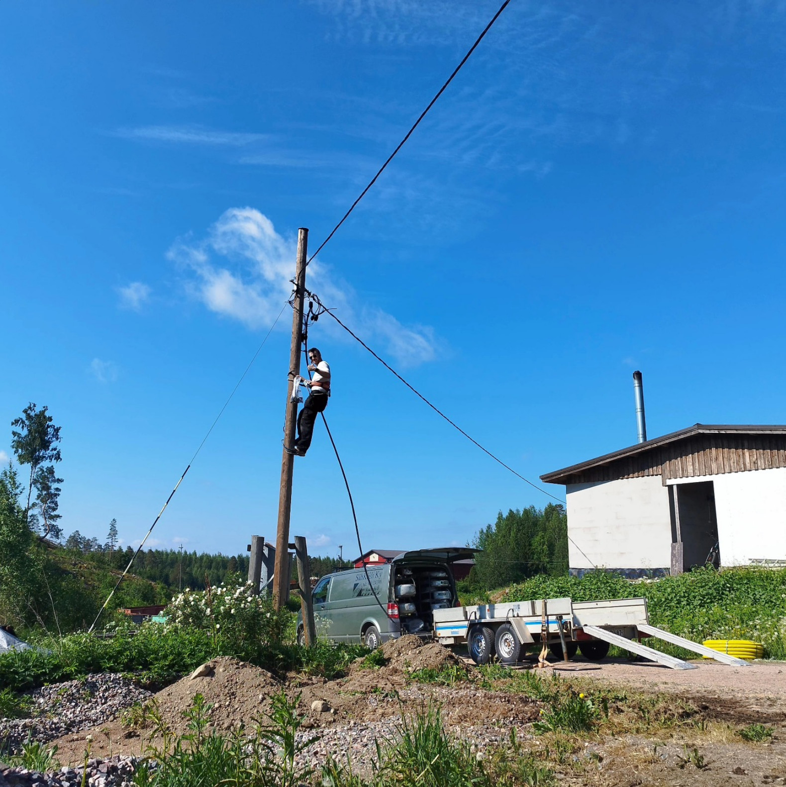
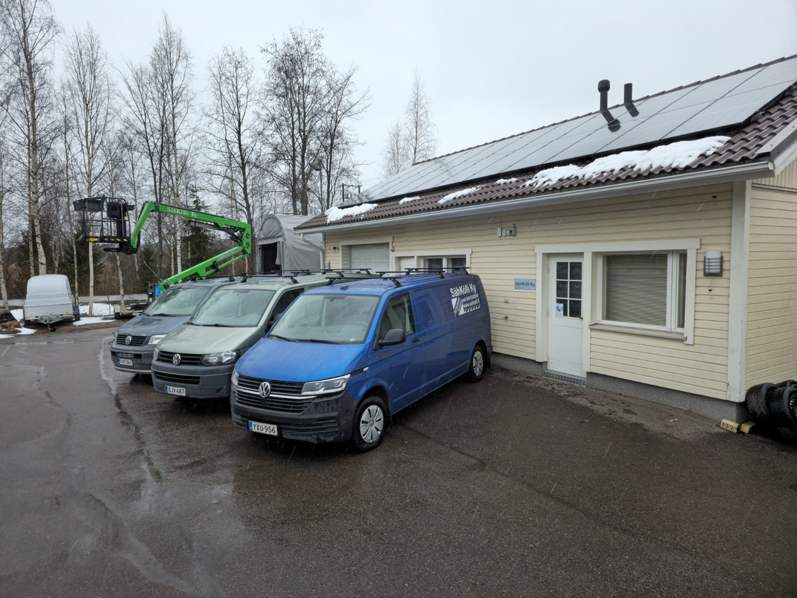
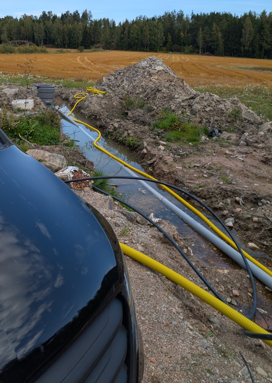

Palvelut
Korjaamassa?
Sähkösaneeraukset
Omakotitalot, rivitalot ja taloyhtiöt. Vanhojen järjestelmien päivitys turvallisesti nykypäivään.
Lue lisää →
Rakentamassa?
Uudisrakennusten sähkötyöt
Uudisrakennusten sähköasennukset suunnittelusta toteutukseen. Selkeä eteneminen ja siisti työnjälki.
Lue lisää →
Sähkösuunnittelu
Turvalliset ja toimivat suunnitelmat uudiskohteisiin ja saneerauksiin.

Lue lisää →
Maakaapelityöt
Maakaapelin näytöt, vikapaikannukset ja kaivuupalvelut minikaivurilla.
Lue lisää →
Aurinkopaneelit
Aurinkosähköjärjestelmien asennus ja huolto.

Lue lisää →
Kalusto & henkilönostin
Kolme huoltoautoa, henkilönostin ja minikaivuri — tehokas kalusto joustavaan palveluun.

Lue lisää →